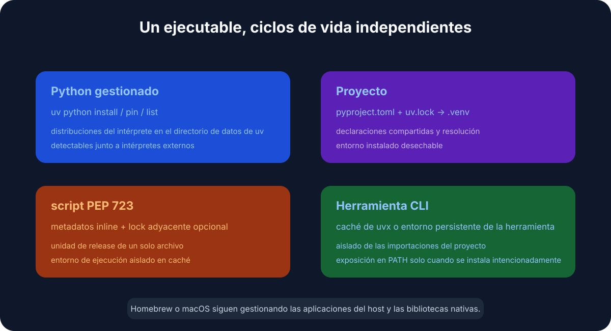
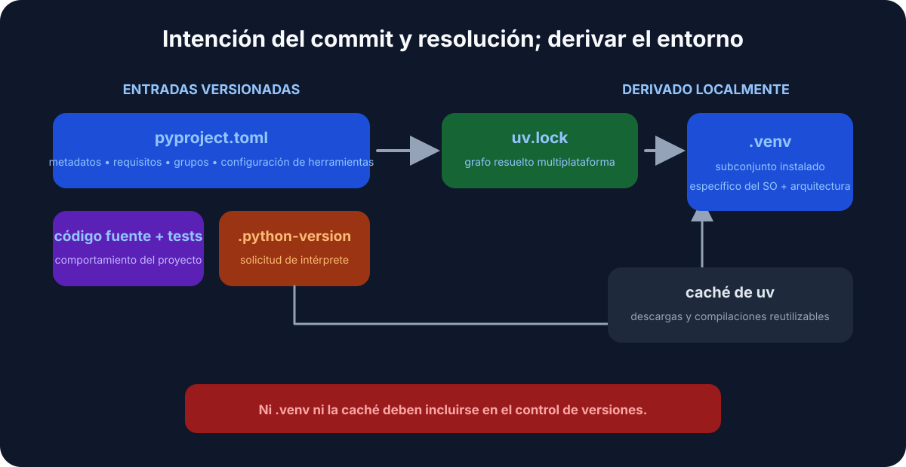
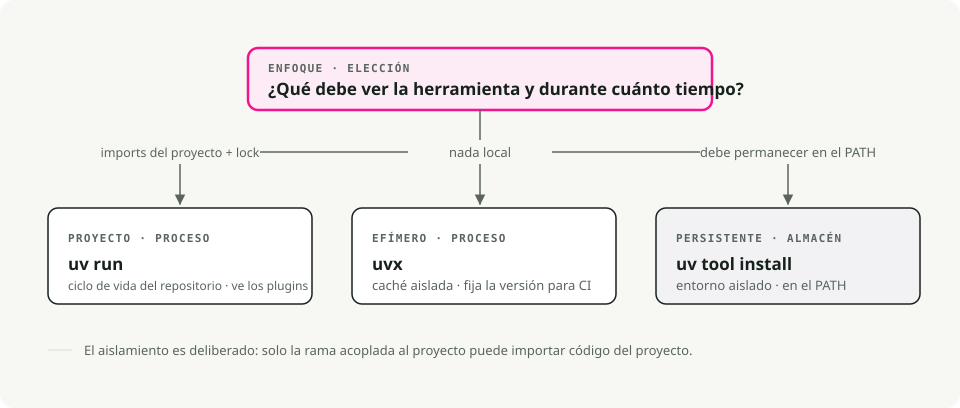
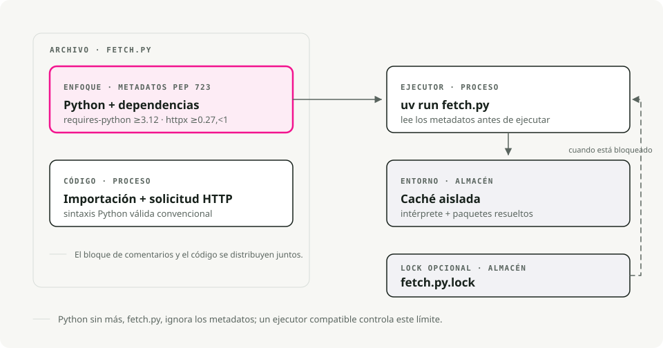

Traducción automática
Este artículo se tradujo automáticamente a partir de la versión original en inglés.
uv en macOS: gestión de versiones de Python, proyectos y herramientas
Inicio rápido
# Install uv
brew install uv
# For new projects (modern workflow)
uv init # create project structure
uv add pandas numpy # add dependencies
uv run train.py # run your script
# For existing projects (legacy workflow)
uv venv # create virtual environment
uv pip install -r requirements.txt # install dependencies
uv run train.py # run your script
# Run tools without installing them
uvx ruff check . # run linter
uvx black . # run formatter
# Run a single-file script with its own dependencies (no project needed)
uv run fetch.py # uv reads the inline deps and runs it
¿Por qué usar uv para Python en macOS?
Si llevas tiempo usando Python, probablemente alternas entre pip, virtualenv, pip-tools, pyenv y poetry según el proyecto. uv hace todo lo que hacen esos, con un solo binario.
Está escrito en Rust y, en mi máquina, instala paquetes aproximadamente entre 10 y 100 veces más rápido que la pila antigua. La mayor ventaja para mí es que dejé de cambiar de herramienta a mitad de tarea.

Sustituye a pip y pip-tools para la gestión de paquetes, a pyenv para instalar versiones de Python, a virtualenv/venv para entornos, a pipx para ejecutar herramientas y a poetry o pdm para flujos de trabajo de proyecto.
Instalar uv
La forma más sencilla de instalar uv en macOS es con Homebrew:
brew install uv
uv detecta automáticamente la arquitectura de tu Mac (Apple Silicon o Intel), así que no hace falta configuración adicional.
Para mantenerlo actualizado:
brew upgrade uv
# OR
uv self update
Conceptos clave
uv cubre tres casos de uso:
- Proyectos — crear una aplicación o librería con dependencias.
- Scripts — ejecutar un script Python de un solo archivo con dependencias inline.
- Herramientas — ejecutar utilidades de línea de comandos (como
ruffohttpie) de forma global.
1. Gestión de proyectos
Para proyectos nuevos, uv usa el estándar pyproject.toml para la configuración y un uv.lock multiplataforma para builds reproducibles.

Empieza un proyecto nuevo:
uv init my-project
cd my-project
Esto crea un pyproject.toml, un .gitignore y un hello.py.
Añade dependencias:
# Runtime dependencies
uv add pandas requests
# Development dependencies
uv add pytest ruff --dev
Ejecuta tu código:
uv run hello.py
uv gestiona por ti el entorno virtual en .venv. No necesitas activarlo manualmente.
2. Gestionar versiones de Python
uv instala y gestiona versiones de Python por ti, almacenadas en ~/.cache/uv. Si has estado usando pyenv para esto, puedes prescindir de él.
Instala una versión concreta:
uv python install 3.12
Fija una versión para tu proyecto:
uv python pin 3.11
Esto escribe un archivo .python-version. En el siguiente uv run, usa la versión fijada y la descarga si hace falta. Tu equipo y CI acaban usando la misma versión de Python sin coordinación adicional.
3. Ejecutar herramientas con uvx y uv tool install
uvx (un alias de uv tool run) ejecuta herramientas Python de línea de comandos sin añadirlas a tu entorno global ni a las dependencias del proyecto.
# Run a linter
uvx ruff check .
# Run a formatter
uvx black .
# Start a temporary Jupyter server
uvx --from jupyterlab jupyter lab
Cada herramienta se ejecuta en su propio entorno temporal, así que no hay conflictos de versión con lo que ya tenga instalado tu proyecto.

Hay dos detalles a los que recurro constantemente:
- Fija la versión inline con
@:uvx ruff@0.6.0 check ., o fuerza la más reciente conuvx ruff@latest. - ¿El nombre del comando no coincide con el paquete? Usa
--from. El paquetejupyterlabincluye el comandojupyter, así que seríauvx --from jupyterlab jupyter lab. Lo mismo para--from httpie http. - ¿Necesitas una dependencia extra para un plugin? Añádela con
--with:uvx --with mkdocs-material mkdocs serve.
Si usas una herramienta todos los días, instálala una vez en lugar de crear un entorno nuevo cada vez:
uv tool install ruff # now `ruff` is on your PATH
uv tool list # see what's installed
uv tool upgrade --all # update everything
uv tool uninstall ruff
La regla práctica: uvx para ejecuciones puntuales o en CI, uv tool install para tus herramientas de uso diario.
Proyectos legacy (requirements.txt)
requirements.txt ha tenido un buen recorrido. Es una lista plana de paquetes sin lockfile, sin separación entre dependencias de aplicación y de desarrollo, y sin registrar por qué está fijado nada. Eso está bien hasta el día en que intentas reproducir un build de hace ocho meses y descubres que “fijado” significaba lo que PyPI resolviera en ese momento.
Si el proyecto es tuyo, migralo. uv lee tu lista actual directamente dentro de un pyproject.toml:
uv init --bare # minimal pyproject.toml, no scaffolding
uv add -r requirements.txt # import runtime dependencies
uv add --dev -r requirements-dev.txt # and dev ones, if you split them
Ahora ya tienes un pyproject.toml y un uv.lock de verdad que fija las versiones exactas resueltas. Confirma que todo se ha importado correctamente con uv pip freeze, borra el viejo requirements.txt y no mires atrás.
Pero puede que lleves ejecutando el mismo requirements.txt desde Python 3.6 y no te interese mi opinión al respecto. Justo. uv sigue funcionando como sustituto directo de pip y venv, sin necesidad de migración:
# Create a virtual environment
uv venv
# Install dependencies
uv pip install -r requirements.txt
# Run it
uv run python app.py
Los mismos comandos de siempre, solo que más rápidos. Nada del flujo antiguo empeora; simplemente ya no tienes por qué seguir usándolo.
Scripts de un solo archivo con dependencias inline
Esta es la funcionalidad que cambió cómo escribo código desechable y de pegamento. Un script Python puede declarar sus propias dependencias dentro del archivo, en un bloque de comentarios definido por PEP 723. Sin pyproject.toml, sin requirements.txt, sin crear un entorno virtual: uv run lee el bloque, construye un entorno cacheado y ejecuta el archivo.
Conviene dejar claro qué hace el trabajo aquí: esto no es una funcionalidad del lenguaje Python, ni una invención de uv. El bloque es solo un comentario, así que python fetch.py a secas lo ignora y falla cuando faltan los imports. PEP 723 es un estándar compartido, así que cualquier runner compatible lee el mismo bloque: pipx run, Hatch y PDM también lo soportan. uv resulta ser la forma más rápida de usarlo, por eso el resto de esta sección usa uv run.

Aquí va todo en un solo archivo, fetch.py:
# /// script
# requires-python = ">=3.12"
# dependencies = [
# "httpx",
# "rich",
# ]
# ///
import httpx
from rich import print
print(httpx.get("https://api.github.com/repos/astral-sh/uv").json())
Ejecútalo:
uv run fetch.py
La primera ejecución resuelve e instala httpx y rich en un entorno cacheado; las siguientes reutilizan ese entorno y arrancan al instante.
No tienes que escribir a mano el bloque de metadatos. uv lo genera y lo edita por ti:
# Create a new script with the block pre-filled
uv init --script fetch.py --python 3.12
# Add or remove dependencies
uv add --script fetch.py httpx rich
uv remove --script fetch.py rich
Para una prueba rápida, incluso puedes omitir el bloque por completo y pasar las dependencias en la línea de comandos:
uv run --with httpx --with rich fetch.py
Por qué esto es genial para scripts de skills y automatización
Yo lo uso mucho para scripts pequeños que no merecen un proyecto: una corrección puntual de datos, un helper de CI, un script de Claude Code skill, una tarea cron. El script es la unidad. Puedes meterlo en un gist, hacer commit en cualquier repositorio o pasárselo a un compañero, y uv run es lo único que necesitan para ejecutarlo correctamente.
Hazlo ejecutable directamente con un shebang:
#!/usr/bin/env -S uv run --script
# /// script
# dependencies = ["httpx"]
# ///
import httpx
...
chmod +x fetch.py
./fetch.py # uv handles the environment behind the scenes
-S divide el shebang en argumentos separados para que env pase --script a uv.
Bloquear y fijar scripts
Para scripts que tienen que seguir funcionando dentro de unos meses, tienes dos opciones.
Bloquea la resolución exacta junto al script:
uv lock --script fetch.py # writes fetch.py.lock
O fija un momento concreto en el tiempo para que uv solo tenga en cuenta paquetes publicados antes de una fecha dada; útil para reproducibilidad sin lockfile:
# /// script
# dependencies = ["httpx"]
# [tool.uv]
# exclude-newer = "2025-04-17T00:00:00Z"
# ///
Consejos y trucos que merece la pena conocer
Algunas cosas más que uso habitualmente y que no son obvias en el inicio rápido.
Sincroniza desde el lockfile en CI. uv sync instala exactamente lo que hay en uv.lock. Añade --frozen para fallar de forma explícita si el lockfile está desactualizado en lugar de volver a resolver silenciosamente; justo lo que quieres en builds de CI y Docker.
uv sync --frozen
Agrupa tus dependencias de desarrollo. Además de --dev, puedes definir grupos de dependencias con nombre en pyproject.toml (docs, lint, test) y sincronizar solo lo que necesites:
uv add --group docs mkdocs-material
uv sync --only-group docs
Inspecciona el árbol de dependencias. uv tree muestra qué ha traído qué, y --outdated marca las actualizaciones:
uv tree
uv tree --outdated
Exporta a requirements.txt cuando una herramienta downstream siga esperándolo:
uv export --format requirements-txt > requirements.txt
Ejecuta un Python puntual con paquetes extra, sin necesidad de proyecto:
uv run --with pandas --with matplotlib python
Gestiona la caché cuando empiece a faltar espacio en disco o un build se tuerza:
uv cache clean # wipe the whole cache
uv cache prune # remove only unused entries
Por qué es rápido
Aquí importan tres cosas. Está escrito en Rust, así que no hay sobrecarga de arranque de Python en cada invocación. Cachea globalmente las wheels compiladas: una vez que numpy está instalado en un proyecto, instalarlo en otro es prácticamente instantáneo (en macOS usa enlaces copy-on-write). Y descarga e instala paquetes en paralelo en lugar de hacerlo de uno en uno.
Resumen
| Task | Old way | The uv way |
|---|---|---|
| Install Python | pyenv install 3.12 |
uv python install 3.12 |
| New project | mkdir proj && cd proj && python -m venv .venv |
uv init proj |
| Install package | pip install pandas && pip freeze > requirements.txt |
uv add pandas |
| Run script | source .venv/bin/activate && python script.py |
uv run script.py |
| Script + deps | un proyecto, o un venv manual solo para un archivo | bloque inline PEP 723 + uv run |
| Run tool once | pipx run black |
uvx black |
| Install a tool | pipx install ruff |
uv tool install ruff |
| Reproducible CI | pip install -r requirements.txt |
uv sync --frozen |
Cambié mi flujo de trabajo de Python a uv poco después de que saliera y no he vuelto atrás. Si sigues con la pila antigua, pruébalo en tu próximo proyecto; así es como yo lo probé antes de moverlo todo.